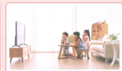
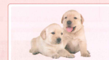

Latihan percakapan · 对话练习
学校前边有一家电影院 (Di depan sekolah ada bioskop) memiliki posisi sebaliknya: “电影院前边是学校” (Di depan bioskop adalah sekolah).
Penjelasan Tata Bahasa: Kalimat eksistensial adalah kalimat yang digunakan untuk menunjukkan keberadaan seseorang atau sesuatu di suatu tempat atau lokasi tertentu, umumnya ditandai dengan penggunaan kata “有” (yǒu - ada) atau “是” (shì - adalah).
Penjelasan Tata Bahasa: Ketika keterangan waktu (time expression) dan keterangan tempat (location expression) digunakan secara bersamaan sebagai keterangan dalam sebuah kalimat, keterangan waktu harus diletakkan sebelum keterangan tempat.
Latihan mengisi bagian rumpang pada kalimat tanya berdasarkan jawaban lawan bicara:
“第” 位于整数的数词前，表示序数。
“第” (dì) precedes cardinal numbers to indicate ordinal numbers (angka urutan/tingkat).

